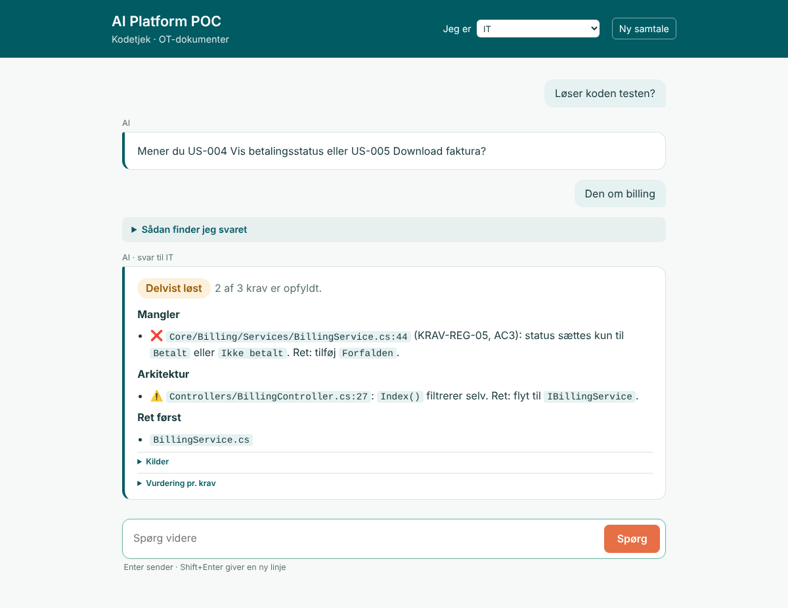

Slide 1
Aalborg Forsyning · Kommunikation og IT
Spørg, om koden løser opgaven, og få et kort svar i dit eget sprog.
Talenoter: Velkommen. I dag handler det om, hvordan Kommunikation og IT kan få et hurtigt og fælles svar på spørgsmålet: Er det her færdigt, og kan det testes? Først problemet, så løsningen, lidt teknik, og til sidst en demo.
Slide 2
Problemet · Kommunikation
Status kræver, at man spørger en udvikler.
Hvad der skal testes, ligger ét sted. Hvad der er bygget, et andet.
Test, driftsbesked eller kundeinformation sættes på pause.
Talenoter: Kommunikation skal vide, hvad der er lavet på selvbetjeningen, og om det kan testes. Men koden kan de ikke læse, og testcasene ligger i Excel. Så de må spørge IT og vente. Tilpas gerne med et eksempel fra hverdagen.
Slide 3
Problemet · IT
Statusspørgsmål tager tid fra udviklingen.
Hvert acceptkriterie skal holdes op mod koden manuelt.
Samme status skal forklares teknisk og i almindeligt sprog.
Talenoter: IT har det omvendte problem. De bliver spurgt om status, og for at svare skal de selv holde hvert krav og hver testcase op mod koden. Og svaret skal så oversættes til almindeligt sprog for Kommunikation.
Slide 4
Kernen i problemet
Azure DevOps
Excel-ark
Dokumenter
Git-historik
Ingen ser det hele på én gang.
Talenoter: Det fælles problem: viden ligger fire steder. Koden i Azure DevOps, testcases i Excel, kravene i en kravspec og hvem der har ændret hvad i git. Det kræver en person at samle det. Det er det, vi vil lade AI'en gøre.
Slide 5
Én chat, hvor begge hold kan spørge, og hvor AI'en selv samler svaret.
Talenoter: Derfor kommer AI Platform. Én chat til både Kommunikation og IT. AI'en gør det, en person ellers skulle gøre: slår kravene op, læser koden og svarer kort.
Slide 6
AI Platform
1
Konkret eller løst. Er spørgsmålet uklart, spørger AI'en tilbage.
2
Koden, testcasene og kravspec.
3
Løst, Delvist løst eller Ikke løst, og hvad der mangler.

Talenoter: Sådan ser det ud. Man vælger, om man er Kommunikation eller IT, og stiller sit spørgsmål. AI'en slår selv op i koden, testcasene og kravspec og giver en dom: Løst, Delvist løst eller Ikke løst. Her er det IT, der får fil og linje. Kommunikation får det samme svar i hele sætninger.
Slide 7
Hvorfor en platform?
Agent-løkken, værktøjerne og søgningen er skrevet én gang. Det, der gør den til Kommunikations eller IT's værktøj, er filer og indstillinger.
| Udvid med | Sådan | Hvor i koden |
|---|---|---|
| En ny rolle | Én linje i opsætningen | settings.py: ROLES og ROLE_TEAMS |
| Svar til en ny målgruppe | En svar-instruks | Skills: audience-<rolle> |
| Et nyt IT-hold | Holdets måde at kode på | Skills: architecture-<hold> |
| Nye krav og testcases | Læg filerne i mappen | RAG/data: .xlsx og .md |
| En anden sprogmodel | Én ny adapter | Porten AgentBrain |
Kommunikation og IT deler i dag samme kerne.
Talenoter: Hvorfor kalder vi det en platform? Fordi kernen er skrevet én gang: agent-løkken, værktøjerne og søgningen. Det, der gør den til et værktøj for Kommunikation eller for IT, er opsætning. En rolle er en linje i settings.py, som bestemmer, hvilke værktøjer rollen får. Hvordan der svares, står i en svar-instruks, en skill: audience-product svarer i hele sætninger, audience-it med fil og linje. Hvordan et IT-hold koder, står i architecture-web; et nyt hold får sin egen fil, uden at koden ændres. Nye krav og testcases lægges bare i mappen. Og sprogmodellen sidder bag en port, så Gemini kan skiftes ud.
Slide 8
Bygget på erfaring
Cognia er AI-platformen ved siden af min analyseplatform Mida. Brugerne kan starte pipelines og spørge ind til ændringer og data i Mida.
Mida: siden april 2026
Cognia: siden juni 2026
POC'en er ikke et første forsøg. Den genbruger en arkitektur, jeg har bygget og brugt siden juni.
Talenoter: Før jeg viser valgene, lidt om hvor arkitekturen kommer fra. Siden min eksamen i april har jeg bygget Mida, min egen analyseplatform. Fra juni byggede jeg Cognia ved siden af, så Midas brugere også fik AI: de kan starte pipelines og spørge ind til ændringer og data. AI Platform POC'en er bygget på samme måde: samme lag, og samme idé om at spørge på almindeligt sprog om, hvad der er ændret. Så det, I ser i dag, er ikke et første forsøg.
Slide 9
Hvorfor er den bygget sådan?
Laver Claude og står bag standarderne MCP og Agent Skills.
Erfaring med agenter i store virksomheder: drift, styring og ansvar.
De næste slides: et valg, hvad kilderne siger, og hvad jeg har gjort.
Talenoter: Jeg har ikke bare bygget noget, der virker. Hvert valg bygger på det, to tunge kilder siger om agenter: Anthropic, som laver Claude og står bag standarderne MCP og Agent Skills, og IBM, som skriver om agenter i store virksomheder. På de næste slides tager jeg valgene et ad gangen: hvad siger kilderne, og hvad har jeg gjort.
Slide 10
Valg 1
Det siger kilderne
“We recommend finding the simplest solution possible, and only increasing complexity when needed.”
Anthropic, Building effective agents
Det har jeg gjort
Talenoter: Første valg: start simpelt. Anthropic siger det direkte: find den simpleste løsning, og gør den kun mere kompleks, når der er brug for det. Derfor er der én agent og ikke en hel hær af agenter. Søgningen er simpel ordsøgning i stedet for en vektordatabase. Den kører på én maskine. Og jeg har kun tilføjet nye mønstre, når et konkret problem viste, at der var brug for dem.
Slide 11
Valg 2
Det siger kilderne
“Deterministic systems anchor the process. Agentic systems enhance it.”
IBM, Building and evaluating AI agents that work in the real world
Det har jeg gjort
Talenoter: Andet valg: lad koden styre det, der har faste regler, og AI'en det, der kræver vurdering. IBM siger: de faste systemer forankrer processen, agenten forbedrer den. Derfor er det koden, der vælger branch, og rollen, der bestemmer værktøjerne, så samme spørgsmål altid tjekker samme kode. Og dommen Løst, Delvist løst eller Ikke løst tælles af koden. AI'en bruges til det, den er god til: at læse koden og kravene og vurdere dem.
Slide 12
Valg 3
Det siger kilderne
MCP: “replacing fragmented integrations with a single protocol.”
Anthropic, Introducing the Model Context Protocol
Skills: “organized folders of instructions, scripts, and resources that agents can discover and load dynamically.”
Anthropic, Equipping agents with Agent Skills
Det har jeg gjort
Talenoter: Tredje valg: brug de standarder, branchen samles om, i stedet for at opfinde vores egne. MCP er Anthropics åbne standard for at give AI adgang til værktøjer og data, i stedet for en ny integration hver gang. Værktøjerne ligger derfor i et eget lag efter MCP's tankegang. Skills er mapper med instrukser, som agenten henter, når den skal bruge dem. Holdets måde at kode på og svarformen til Kommunikation og IT er skills. Et nyt hold er en ny mappe, ikke ny kode.
Slide 13
Valg 4
Det siger kilderne
Prioritize “transparency by explicitly showing the agent's planning steps.”
Anthropic, Building effective agents
“Runtime visibility—not just uptime—is essential.”
IBM, Building and evaluating AI agents that work in the real world
Det har jeg gjort
Talenoter: Fjerde valg: man skal kunne se, hvordan svaret blev til. Anthropic siger, at agentens skridt skal vises. IBM siger, at det ikke er nok, at systemet kører; man skal kunne se, hvad det gør. Derfor vises hvert skridt live på siden, Kilder-boksen viser de filer, der er brugt, og vurderingen pr. krav kan efterprøves. Det er det, der gør, at man kan stole på svaret.
Slide 14
Valg 5
Det siger kilderne
“Assist agents recommend. Humans decide.”
IBM, Building and evaluating AI agents that work in the real world
“Set limits on access to workflows, APIs and enterprise systems.”
IBM, Agentic AI governance playbook
Det har jeg gjort
Talenoter: Femte valg: agenten anbefaler, mennesket beslutter. IBM siger det kort: agenter anbefaler, mennesker beslutter. Og man skal sætte grænser for, hvad agenten har adgang til. Derfor kan den kun læse koden, aldrig ændre den, og den kan ikke se uden for repoet. Den stopper efter højst 20 skridt, som Anthropic også anbefaler med en fast grænse. Er spørgsmålet uklart, spørger den tilbage i stedet for at gætte. Og dommen er en anbefaling; det er testen og mennesket, der afgør.
Slide 15
Kodearkitektur
Hjernen
Beslutter, hvad der skal slås op, og hvornår der er nok til et svar.
Hænderne
Værktøjer: søg i krav, læs kodefiler, vælg den rigtige branch.
Hukommelsen
Testcases, kravspec og dokumenter, delt op og søgbare.
Arbejdsinstrukser
Hvordan der vurderes, og hvordan der svares til hver rolle.
Talenoter: Koden er delt i fire lag, hver med én opgave. Agenten er hjernen, der beslutter. MCP er hænderne, værktøjerne den kan kalde. RAG er hukommelsen med testcases og kravspec. Skills er arbejdsinstrukserne: hvordan der vurderes, og hvordan der svares til Kommunikation og til IT.
Slide 16
Workflows og AI
Workflow: fast kode bestemmer vejen
Agent: AI'en bestemmer selv vejen
1 · Kode
2 · Kode
3 · Kode
4 · Agent
5 · Kode
6 · AI, fast trin
Anthropics mønstre i POC'en
Med: augmented LLM
Med: agent-løkke
Med: prompt-kæde, vurdering så svar
I kode: routing via rollen
Næste: evaluator-optimizer
Fravalgt: parallelisering, orchestrator-workers
Talenoter: Anthropic skelner mellem workflows, hvor fast kode bestemmer vejen, og agenter, hvor AI'en selv bestemmer. POC'en er en blanding: en fast workflow med én agent i midten. Fire af de seks trin er almindelig kode: rollen giver værktøjerne, koden vælger branch, et tidligere svar genbruges eller kun ændrede filer læses, og dommen tælles af koden. Kun trin 4 er en rigtig agent, der selv bestemmer, hvad den slår op og læser. Trin 6 bruger AI, men som et fast trin i kæden. Af Anthropics mønstre har vi augmented LLM, agent-løkken og prompt-kæden. Routing sker i koden via rollen. Evaluator-optimizer, hvor koden tjekker vurderingen og sender den tilbage, er næste skridt. Parallelisering og orchestrator-workers er fravalgt, fordi de gør det dyrere og mere komplekst, uden at vi har brug for det endnu.
Slide 17
Skalering og næste skridt
Opsætning, ingen ny kode
Ny kode, men et kendt sted
Drift, ikke kode
“In a prototype, minor inconsistencies are acceptable. In production, they are incidents.” IBM, Building and evaluating AI agents that work in the real world
Talenoter: Hvor svært er det at skalere? Det nemme er opsætning, som vi så på slide 7: en ny rolle, et nyt IT-hold, nye krav eller en ny sprogmodel. Mellem er ny kode, men et sted, arkitekturen allerede har gjort plads til, og det er også vores næste skridt: frie spørgsmål som hvad er ændret siden i går, at finde en persons ændringer ud fra commits, nye værktøjer til wiki og systemdokumentation, at agenten åbner siden og tager et billede, hvis en ændring har ødelagt den, og søgning på betydning bag søge-porten. Det svære er ikke koden, men drift: at flytte den fra en maskine til en server, login og adgang pr. bruger, en betalt model eller en model i vores egen Azure, flere spørgsmål på samme tid, fordi den i dag kun tjekker ét ad gangen, og at måle, om svarene er rigtige. IBM siger det godt: i en prototype er små fejl i orden, i drift er de hændelser.
Slide 18
Konkrete og løse spørgsmål fra Kommunikation og IT.
Talenoter: Nu skifter vi til browseren. Jeg stiller fire spørgsmål: et konkret og et løst fra Kommunikation, og det samme fra IT.
Slide 19
Kommunikation · konkret
„Kan kunderne downloade deres faktura nu (US-005)?“
Forvent: dom og årsag i hele sætninger.
Kommunikation · løst
„Jeg har snakket med Diaco og mener, de seneste ændringer virker. Gør de det?“
Forvent: AI'en spørger tilbage med sit bedste gæt.
IT · konkret
„Løser vores kode US-004 Vis betalingsstatus?“
Forvent: Delvist løst, med fil, linje og rettelse.
IT · løst
„Løser koden testen?“
Forvent: „Mener du US-004 eller US-005?“
Talenoter: Spørgsmålene er forslag. Udskift dem med dem, du har forkørt. Pointen: konkrete spørgsmål giver en dom med det samme. Løse spørgsmål får AI'en til at spørge tilbage med sit bedste gæt, ligesom en kollega ville. Samme vurdering til begge roller, kun sproget er forskelligt.
Slide 20
Tilbage til spørgsmålet
Før
Spørg en udvikler, og vent på svar.
Nu
Spørg AI Platform, og få svaret med kilder på 1 til 2 minutter.
Talenoter: Vi startede med spørgsmålet fra Kommunikation: er det færdigt, og kan vi teste det? Før skulle man spørge en udvikler og vente. Nu kan både Kommunikation og IT spørge AI Platform selv og få et svar med kilder på et par minutter.
Slide 21
Talenoter: Tak for nu. Har I et spørgsmål, så lad os stille det til AI Platform live.
Slide 22 · backup
Byggestenen
“The basic building block of agentic systems is an LLM enhanced with augmentations such as retrieval, tools, and memory.” Anthropic, Building effective agents
Søg krav, læs kode, vælg branch
Slå op, før der svares
Hvordan der vurderes og svares
I dag Google Gemini. Kan skiftes til fx Claude uden at røre resten.
Talenoter: Arkitekturen følger Anthropics artikel Building effective agents. Grundideen er den udvidede sprogmodel: en model, der kan slå op i viden, bruge værktøjer og følge faste instrukser. RAG betyder bare, at den slår op, før den svarer, så den ikke finder på. Start simpelt, og byg kun mere på, når det giver værdi.
Slide 23 · backup
Pattern: porte og adaptere
| Port | I dag | Kan skiftes til |
|---|---|---|
| Hjerne | Google Gemini | Claude eller en model i egen Azure |
| Søgning | Søgning på ord | Søgning på betydning |
| Kode | Kopi af Azure-repoet | Andre repoer |
| Pull requests | Azure DevOps | GitHub |
Resten af koden mærker intet til skiftet.
Talenoter: Arkitekturen er porte og adaptere. Kernen taler kun med små faste grænseflader. Bag hver grænseflade sidder en adapter, som kan skiftes. I dag er hjernen Gemini, fordi den er gratis til en POC. I drift kan det være Claude eller en model i vores egen Azure, uden at resten af koden ændres.
Slide 24 · backup
Flowet
1
Med rollen: Kommunikation eller IT.
2
Åben pull request, ellers dev.
3
Tænk, handl, se. Gentag til der er nok.
4
Én linje pr. krav. Koden tæller dommen.
5
Skrevet til rollen, kort og klart.
Mønstre fra Anthropic:
Augmented LLM
Agent-løkke
Prompt-kæde: vurdering, så svar
Talenoter: Sådan går et spørgsmål igennem. Først vælger koden, hvilken branch der skal tjekkes: en åben pull request, ellers dev. Så kører agent-løkken: AI'en tænker, kalder et værktøj, ser resultatet og gentager. Den skriver én linje pr. krav, og det er koden, ikke AI'en, der tæller dommen. Til sidst skrives svaret til rollen. Det er tre af mønstrene fra Anthropics artikel.
Slide 25 · backup
Dokumentation
flowchart TD
U[Bruger] --> W[Web-side]
W --> A[Agent]
A --> T[Værktøjer]
T --> R[(Viden)]
Diagrammerne ligger i repoet og wikien ved siden af koden. De ændres sammen med den, så de passer.
Bruger
Web-side
Agent
Værktøjer
Viden
Talenoter: Al dokumentation af arkitekturen er skrevet i Mermaid: diagrammer som almindelig tekst. Til venstre koden, til højre det diagram, den bliver til. Fordi det er tekst, ligger det i repoet og wikien og ændres sammen med koden. Flowet, vi lige så, er tegnet på samme måde i DEMO.md.